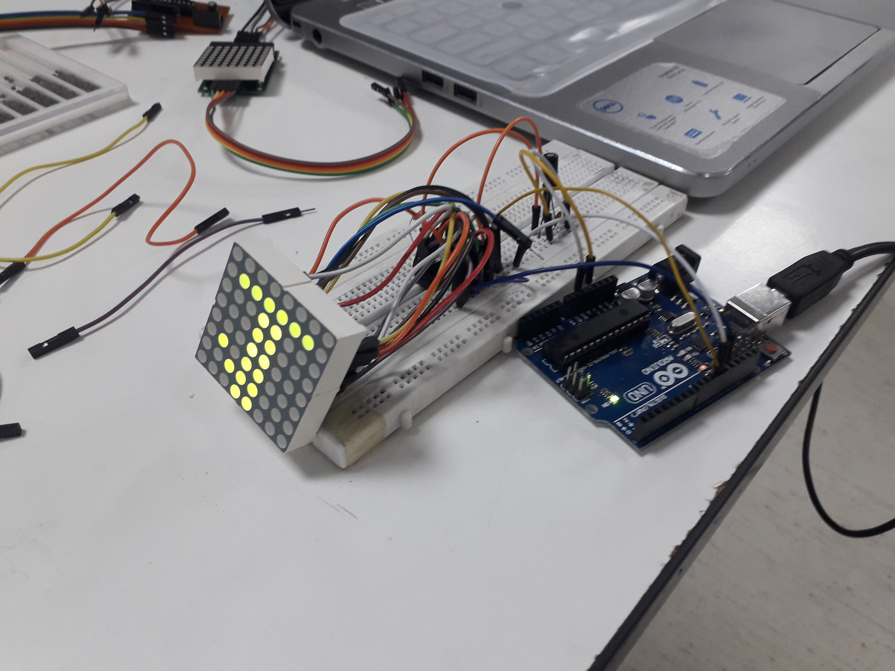
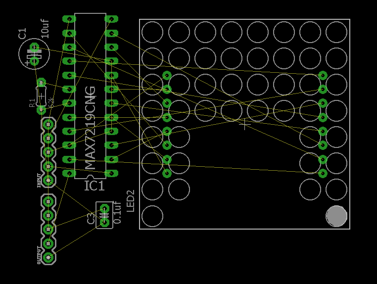

PCB Layout:-
One of the big issue with our project was “How to set PCB layout for the 3x3 led matrix display. The main problem was that the leds work in a cascaded manner so they are needed to be connected in a very precise and carefull manner. After lots of consideration we decided to design the PCB layout in such a way that the leds will be placed serially on the PCB board 3 leds on a row and they will be connected such that the data-out connection from each led will be connected to data-in connection. In this way the PCB Layout is set for our project.
One of the major issue which we faced that the output were inverted as shown in the below diagram. We were surprised with such results because everything was working well but the output was inverted every time the code was run. This was a real concern for us because we could not move on until we solve this problem.
|  |  |
After lot of search, study different websites and going through datasheet for led matrix finally we found the error. The error was in connecting the rows and columns in a wrong manner. Because we had changed our led matrix and with that the configuration of leds in the matrix was also changed.
In the previous led matrix the leds were configured from 1-8 as the columns. With the new matrix the configuration had totally changed now the leds were configured in a vice versa (i.e) from 8-0 as the columns for the leds. After connecting led matrix in the right way we got this issue solved. This was done because of the combined efforts of our team members.
PCB Routing:-
One of the most hectic and complicated job in our project was routing that board file in such a way that there must be no crossover. Another challenge was that it must be one layer PCB which increases over burden. We tried our best to reduce and avoid as much cross over as possible. Below is the image of unrouted PCB board which almost took us two days to route.
First when we routed our board file all the components were not mirrored so we have to solder it on upper (cupper side) of the sheet which was very difficult to solder. After that we mirror every component and route board file again.After much efforts we were able to route our pcb.
|  |  |
Program Code
To show any specific pattern on the led matrix Display requires thorough understanding and deep concept of the functions used in the coding. To set the code for desired output like in our case an analog clock pattern was a tricky and challenging task. We had to search out many different websites and took the help of our coordinators. We also had to gone through different libraries and their functions to understand how the codes are working. This took many weeks with day by day progress towards our objective. At last after lot of efforts, We got it, we successfully set the code for our desired output.
The credit for this goes to our team members, Lab Assistances and Supervisor, who helped around-the-clock to make this happen.
|